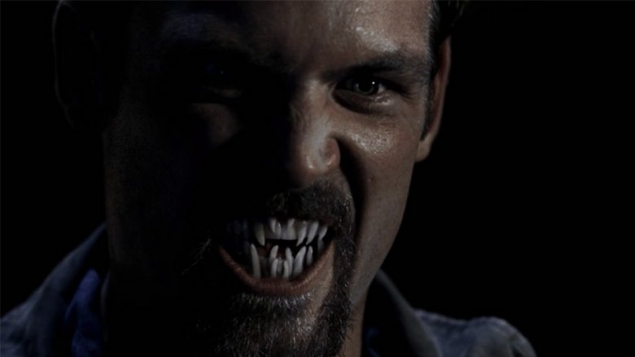
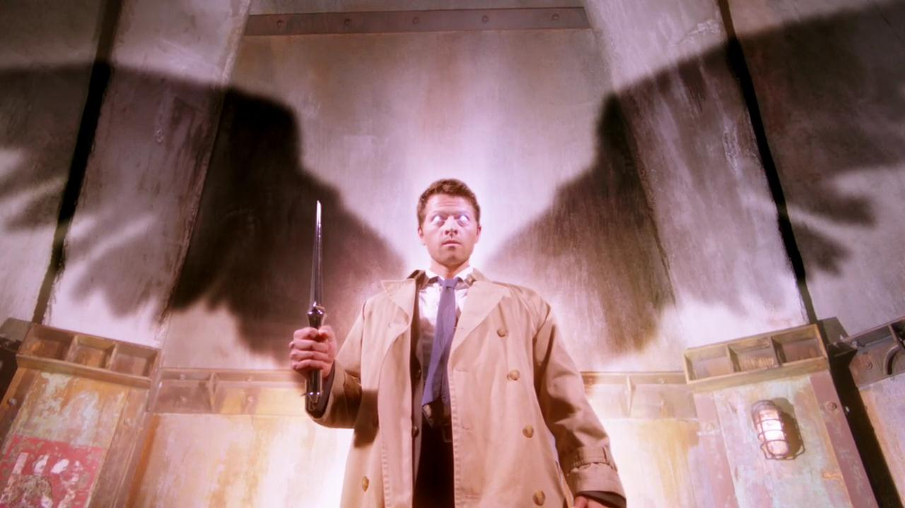

Monstri
Universul serialului Supernatural este dominat de o mulțime de creaturi inspirate din diferite legende și povești .
Vampiri
Vampirii sunt ființe mitologice sau folclorice, care subzistă prin hrănirea în special cu sânge de la creaturi vii, indiferent dacă sunt strigoi sau persoane în viață. Cu toate că entitățile vampirice au fost înregistrate în multe culturi se crede că vampirii și demonii sunt la fel de vechi ca și omul însuși. Termenul de "vampir" devine popular la începutul secolului al XVIII-lea, după un aflux de superstiții vampirice în Europa de Vest din zonele unde legendele despre vampiri au fost frecvente, cum ar fi Balcani și Europa de Est, deși variante locale au fost, de asemenea, cunoscute sub nume diferite
Concepții privind apariția vampirilor
Cauzele de transformare în vampir au fost numeroase și variate în folclorul original. În slava și tradițiile chineze, orice cadavru care a fost sărit de un animal, în special câine sau pisică, a fost temut să devină unul dintre nemuritori. Un corp cu o rană ce nu a fost tratată cu apă fierbinte era de asemenea un risc. În folclorul rusesc, vampirii s-au spus că au fost o dată vrăjitoare sau oameni ce s-au răzvrătit împotriva Bisericii în timp ce ei erau în viață. Practicile culturale au apărut de multe ori, pentru a putea preveni transformarea unei persoane iubite într-un vampir. Îngroparea unui cadavru cu susul în jos a fost răspândită, așa cum a fost plasarea de obiecte pământești, cum ar fi coase sau seceri, lângă mormânt pentru a satisface orice demon care intra în corpul său. În cea mai întâlnită legendă se spune că primul vampir a fost creat de un demon.
Metode de protecție
Usturoiul sau apa sfințită sunt obișnuite în folclor. Elementele variază de la o regiune la alta. În Europa, se folosește o ramură de trandafir și păducel, sau o stropitură cu semințe de muștar pe acoperișul casei îi ține pe aceștia departe. Alte obiecte sunt cele sacre, cum ar fi, de exemplu: un crucifix, rozariul sau apa sfințită.
Demoni

Un demon este o entitate supranaturală răuvoitoare . Din punct de vedere istoric, credința în demoni, sau poveștile despre demoni, apare în religie, ocultism, literatură, ficțiune, mitologie și folclor; precum și în mass-media, cum ar fi benzi desenate, jocuri video, filme și seriale de televiziune.
Credința în demoni se întoarce probabil din epoca paleolitică , izvorând din frica umanității de necunoscut. În religiile antice din Orientul Apropiat un demon este considerat o entitate spirituală dăunătoare care poate provoca posedarea demonică, solicitând un exorcism. Credința în demoni rămâne o parte importantă a multor religii moderne și tradiții ocultiste. Demonii sunt încă temuți în mare parte din cauza presupusei lor puteri de a poseda creaturi vii.
Îngeri
Îngerii sunt, în mai multe religii, ființe spirituale pozitive sau negative (îngerii căzuți, în creștinism), ele fiind spirite cu sau fără corp venite din ceruri. Învățăturile religioase variază între ele, în special la aspectul în care îngerii ori au voință proprie, ori sunt extensii ale voinței supreme ale lui Dumnezeu. Deși înfățișarea îngerilor diferă, aceștia primesc o înfățișare umană cu aripi.
Primii creștini au preluat ideile evreiești referitoare la îngeri. În prima fază, conceptul creștin al unui înger a preschimbat îngerul într-un mesager divin și manifestarea lui Dumnezeu Însuși. Ulterior, mesagerii divini au fost individualizați: Lucifer, Rafael, Gabriel, Michael și Uriel. Apoi, în cursul a mai mult de două secole (din secolul al III-lea până în secolul al V-lea), imaginea îngerilor a preluat caracteristici definitorii în teologie și în artă.
Fantome
Fantoma este o ființă ireală, imaginară, pe care cred că o văd, sau pretind că o văd, unii oameni, și care ar reprezenta de obicei duhul unui mort legat de pământ.
În general, stafia reprezintă întruchiparea sufletelor celor morți, diferită însă de strigoi. Stafiile de regulă "bântuie", adică se arată în locurile în care au trăit în timpul vieții, cel mai adesea fără a interfera cu existența actualilor locuitori, cel mult, speriindu-i. Uneori pot fi văzute (cea mai cunoscută reprezentare fiind ca o ființă imaterială, dintr-un fel de fum alb), alteori își fac simțită prezența numai prin sunete sau semne (obiecte mutate, luate din loc etc.). Urmările faptelor lor sunt ceea ce este cunoscut sub numele de poltergeist. Pentru a scapa de o stafie trebuie sa arzi si sa arunci cu sare pe ramasitele fizice ale persoanei decedate. Stafiile nu pot trece de liniile de sare. Daca stai intr-un cerc de sare stafiile nu au cum sa se apropie de tine.